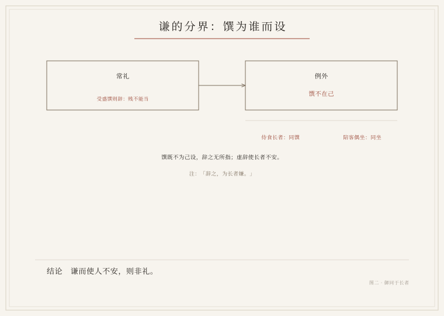

曲礼上 · 一·八十一 · 第 79 课
陪长者食，馔与本为长者所设者相同；馔中有重殽重膳（贰），侍者也不辞其多。道理简单：这一桌馔本不是为我设的。
说什么事：御同于长者，虽贰不辞。
落在哪一层：仪，兼及分。辞与不辞，看馔为谁而设。
为何编在此位：上节论食余之祭，此节转论食馔之辞。皆一「谁之物」的问题。
【经】御同於長者，雖貳不辭。
【注】謂侍食於長者，饌具與之同也。貳謂重殽膳也。辭之，為長者嫌。
御 疏「御谓侍也」。此处御作侍食解，与上「劝侑曰御」微异。
同 疏「同谓侍食而与长者同馔也」。馔具与长者一般。
贰 注「贰谓重殽膳也」；疏「贰谓重也」。殽膳重叠，菜多于常。
不辞 不辞其多。辞多，是说自己当不起这许多。
为长者嫌 注。若辞，则像是说长者待己过厚，使长者不安。
何胤说 「礼：当盛馔，宜辞以贱不能当之。此侍食于长者，盛馔不在己。」故不辞。
陪长者同食，馔与本为长者所设者相同；即使殽膳重叠，也不辞让。
一节讲「不辞」的理由。盛馔宜辞，是一条常礼；此节是其例外，而例外的根据不在己之谦，在馔之所属：馔为长者设，己不过同食，辞则把长者的馔算到自己头上。
第一层 辞盛馔是常礼 疏引何胤：当盛馔宜辞，以贱不能当之。谦让有其正当之处。
第二层 馔不在己 此节之转语。馔具虽与长者同，其设之意不在己。既不在己，则无可辞。
第三层 为长者嫌 注三字最细。辞多本是谦，此处的谦会让长者觉得自己待客过厚而失度。谦而使人不安，则非礼。
第四层 同馔之义 同馔不是同享，是侍食者得与长者共一膳。名分上仍是侍，不是客。
与今日何干 陪长辈吃饭，长辈布了一桌好菜，你不必再三说「太多了、太破费了」。这话说多了，是替长辈认了个不会待客的名。
| 左 | 右 |
|---|---|
| 御同于长者 | 侍食而与长者同馔 |
| 馔具与之同 | 馔本为长者设，己得同食 |
| 贰 | 重殽膳，丰厚重叠 |
| 虽贰不辞 | 馔不在己，无可辞 |
| 辞之为长者嫌 | 谦而使长者不安，则非礼 |
| 何胤说 | 盛馔不在己，故不辞 |
画一张长案，案上馔品重叠、层层叠起（示贰），案的一端只有一副餐具、位置偏侧，示侍食之位；另一端餐具端正。案旁无辞让之手。不画人、不写文字。赭色只在最上一层器盖。
